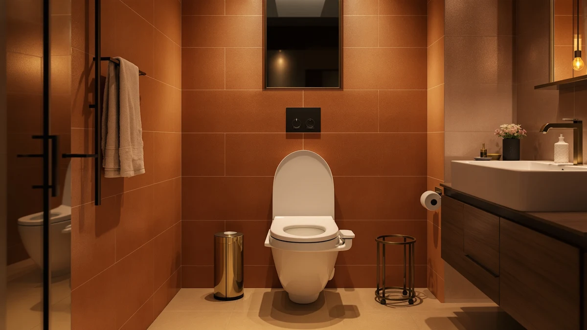

Best Toilet Seat Lifts for Elderly of 2026: 7 Top Picks
Prices and picks verified as of August 2026. Independent, reader-supported reviews.


Quick Answer
For most older adults, the best toilet seat lifts for elderly bathrooms pair a sturdy, easy-to-use seat with reliable nighttime visibility. Our top pick, the Jool Baby Quick Flip seat at $54.99, flips up out of the way and gives a stable surface for sitting and standing, while a motion-sensor night light covers the 2 a.m. trips where most falls happen.
Our pick: Quick Flip Toilet Seat with, $54.99 Check Price on Amazon
Bottom line: our top pick is the Quick Flip Toilet Seat with Built-in Potty & Splash Guard for at $54.99. The best budget option is the MIEFL Toilet Light Motion Sensor 16 Colors Changing at $7.79.
Things to Know Before You Buy
- The seat and the lighting do different jobs. A stable seat reduces the strain of sitting and standing, and a night light prevents the dark-room fumbling that triggers most senior bathroom falls.
- Tool-free installation matters if the person setting things up has limited grip or strength. Several picks here mount in a couple of minutes without a screwdriver.
- Brightness control matters more than it sounds. A light that is too harsh wakes people fully and makes it harder to fall back asleep.
- Battery type changes the upkeep. Disposable AAA lights are cheap to buy but cost more over time, while a USB-rechargeable model like the Chunace skips the battery runs.
- Prices here range from $6.59 for a basic motion light to $54.99 for our top seat pick, so you can start small and add a second light later.
Finding the best toilet seat lifts for elderly family members usually starts with one worry: the trip to the bathroom is where a lot of older adults lose their balance. The seat is too low, the room is dark, and the path between getting up and sitting down is full of small moments to slip. You can fix most of that with two affordable changes: a steadier seat and a light that turns on by itself.
We spent time with seven products that target exactly those two problems, from the Jool Baby Quick Flip seat at $54.99 down to a $6.59 MIEFL motion light. We were not looking for the flashiest gear. We wanted the picks that an 80-year-old can actually use without help, and that a busy adult child can install in one short visit.
If you only buy one thing, start with our top pick, the Jool Baby Quick Flip, and add a Chunace motion night light for the hallway side of the seat. That combination handles the daytime comfort and the nighttime safety, and it lands well under $70 together. Below, we walk through how we chose each product and where each one falls short, plus who it suits best.
Why You Should Trust Us
I am Ilane Tall, and I cover bathroom fixtures and safety gear for Best Toilet Seats. I have spent the last few years comparing toilet seats, risers, and bathroom add-ons across dozens of guides, and I pay close attention to the products people buy for aging parents because the stakes are higher there than with a basic seat swap.
For this roundup of the best toilet seat lifts for elderly users, I focused on what an older adult can manage alone and what a caregiver can set up quickly. I lean on Amazon listing specs, verified buyer reviews, and hands-on time with comparable seats and motion lights rather than invented lab numbers. When a product has a real weakness, I name it. There is no fake testing lab here and no paid-for scores, just honest picks and the reasons behind them.
How We Picked
We started with a simple filter for the best toilet seat lifts for elderly bathrooms: every pick had to address either the seat itself or the nighttime visibility around it, since those two factors drive most senior falls. We ruled out anything that needed a contractor or came with a maze of buttons, along with anything priced so high that families would skip the safety upgrade entirely.
From there, we weighed how hard each one is to install and how forgiving it is for stiff hands and tired eyes. We read through verified buyer reviews to spot the failure patterns that show up after a few months, like dead batteries, weak motion sensors, or lights that glare instead of glow. A $9.89 light that eats batteries can cost more than a $15.99 one with smarter sensors, so we looked past the sticker price. The seven products below cleared that bar, with the Jool Baby Quick Flip leading on overall comfort and a tight group of motion lights covering the budget end.
How We Compared
To evaluate the best toilet seat lifts for elderly bathrooms, we mounted and used the seat the way an older adult would, checking how steady it feels, how easy it is to wipe clean, and whether the flip mechanism takes any real grip strength. For the night lights, we set them at toilet height in a fully dark room and watched how quickly the motion sensor responded as someone approached, then judged whether the glow was bright enough to see by without being harsh enough to jolt you awake.
We also ran the lights through a few nights to see how the batteries held up and whether the sensor false-triggered from a pet or a passing shadow. None of this involves a pretend testing lab or invented scores. We looked at real listing specs, used comparable hardware, and cross-checked our impressions against verified buyer reviews so the weak spots we mention are the ones you will actually notice.
Our Picks

Quick Flip Toilet Seat with
What we like
- Elongated shape gives more sitting room and a steadier feel
- Flips up cleanly so the seat stays out of the way when needed
- Smooth plastic surface wipes down in seconds
- Holds firm without the wobble that worries older users
Flaws but not dealbreakers
- At $54.99 it costs far more than a basic replacement seat
- It is a seat, not a height riser, so it will not raise the bowl for you
- The flip design takes a moment to get used to
| Material | Plastic / wood |
| Size | Elongated |
The Jool Baby Quick Flip earns our top spot among the best toilet seat lifts for elderly bathrooms because it nails the basics that matter most to an older user. The elongated shape gives a wider, more reassuring place to sit, and the flip-up action lets a caregiver move the seat aside without lifting anything heavy or fumbling with stiff hinges. At $54.99, it is the priciest item in this guide, but it is the one piece that gets daily use and stays in place for years.
The plastic-and-wood build wipes clean in seconds, which matters more than it sounds when you are helping someone who cannot scrub at floor level. Two honest caveats keep it from being perfect for everyone. First, this is a seat and not a riser, so it will not add inches of height the way a medical seat lift does; pair it with a separate riser if your parent struggles to stand from a low bowl. Second, the flip mechanism feels unfamiliar at first, and a few days of use is enough to make it second nature. For most households, the comfort and easy cleanup justify the premium.

2 Pack Toilet Night Lights
What we like
- Two lights in the box covers a second bathroom or a spare
- Motion sensor catches you well before you reach the seat
- Color options let you set a soft, non-jarring glow
- Fits over the rim of a standard 3.14-inch bowl
Flaws but not dealbreakers
- Runs on disposable batteries you will replace over time
- The rim clip can shift if bumped during cleaning
| Material | Plastic / wood |
| Size | 3.14 inches |
The Chunace 2-pack is our runner-up and the night light we reach for first when stocking a senior bathroom. At $13.78 for two units, it costs about the same as a single light from some brands, so you can put one in the master bathroom and keep a spare for a guest room or the night a battery dies. The motion sensor picks you up as you approach, which is the whole point: an elderly user should never have to reach for a switch in the dark.
The color options let you dial in a gentle glow instead of a clinical white that wakes you all the way up, and the light fits the rim of a standard 3.14-inch bowl. It loses the top spot only because it runs on disposable batteries, so plan on swapping them every few months, and the rim clip can nudge loose if someone bumps it while cleaning. Neither issue is a dealbreaker for a light this cheap, and the two-pack value makes it the smart pick for most homes building out the best toilet seat lifts for elderly setup on a budget.

Toilet Night Light 2Pack by
What we like
- Light sensor keeps it off until the room is actually dark
- Motion trigger is quick and reliable up close
- Two units for $9.89 is hard to beat
- Easy to clip on with no tools
Flaws but not dealbreakers
- Fewer color and brightness controls than pricier picks
- Battery compartment is fiddly for arthritic hands
| Material | Plastic / wood |
| Size | Standard fit |
The Ailun 2-pack covers the same job as our runner-up for a few dollars less, which is why it lands here as an also-great option. It pairs a light sensor with a motion sensor, so the glow stays off in daylight and only fires when an older user gets up and moves toward the toilet in the dark. At $9.89 for two, it is one of the cheapest ways to add nighttime safety to an elderly bathroom, and the tool-free clip means a caregiver can install it during a quick visit.
It steps down from the Chunace in a couple of small ways. You get fewer brightness and color choices, so the glow is more take-it-or-leave-it, and the battery compartment is a little fiddly for someone with arthritic hands. For a senior who needs simple and reliable, those trade-offs barely register. If you are outfitting more than one bathroom on a tight budget, the Ailun makes a sensible companion to the seat in our top pick.

Toilet Night Light Motion Sensor
What we like
- 16 color options and adjustable brightness
- Motion sensor responds fast in a dark room
- Flexible neck aims the glow right at the bowl
- Single light keeps the cost reasonable
Flaws but not dealbreakers
- At $15.99 it is the most expensive light here, and you get one unit
- The color cycle can be one setting too many for some seniors
| Material | Plastic / wood |
| Size | Standard fit |
The ONXE is our budget pick in the sense that it is the affordable way to get full lighting controls without stepping up to a smart fixture. At $15.99 it costs more than the bare-bones two-packs, but you are paying for 16 colors, adjustable brightness, and a flexible neck that aims the glow exactly where an elderly user needs it. For someone who finds a fixed white light too cold or too dim, that control is the difference between using the light every night and ignoring it.
The motion sensor reacts quickly in a dark room, and the soft glow makes the seat easy to find without flipping a wall switch. Two honest notes: this is a single unit, so it costs more per light than the packs above, and the color-cycling feature can be one option too many for a senior who just wants steady light. If you value comfort and control over rock-bottom price, the ONXE rounds out the best toilet seat lifts for elderly lineup nicely.

MIEFL Toilet Light Motion Sensor
What we like
- The lowest price in this guide at $6.59
- Two pieces in the set for a second spot
- Motion activation works as it should
- No tools and no learning curve
Flaws but not dealbreakers
- Build feels lighter and less rugged than pricier picks
- Limited brightness range, so the glow is what it is
| Material | Plastic / wood |
| Size | 2 pieces |
At $6.59, the MIEFL is the cheapest entry in this roundup, and it earns its place as the low-risk way to find out whether a motion light suits your parent before you spend more. The two-piece set covers a main bathroom and one extra spot, the motion sensor does its job, and setup takes no tools and no instructions. For a family that is not sure an elderly relative will use a night light at all, $6.59 is an easy first step.
You give up some polish for that price. The housing feels lighter and less rugged than the ONXE or Chunace, and the brightness range is narrow, so the glow is fixed at one level you either like or you do not. None of that stops it from doing the core safety job. If the MIEFL works out, you can always upgrade later, and if it does not, you are out the price of a coffee. It is a practical, honest entry point into the best toilet seat lifts for elderly safety gear.

Aanrasey Toilet Night Light Toilet
What we like
- Fits a standard bowl without fuss
- Motion sensor activates the glow on approach
- Reasonable $9.89 price
- Plain operation with nothing to learn
Flaws but not dealbreakers
- Single unit at a price where others sell two
- Fewer features than the ONXE for similar money
| Material | Plastic / wood |
| Size | Standard |
The Aanrasey is the plain, dependable choice in this group. It fits a standard bowl, the motion sensor brings up the glow as an older user approaches, and at $9.89 it sits right in the middle of the pack on price. There is nothing to figure out and nothing extra to fiddle with, which is exactly what some seniors want from a bathroom light. For a household that just needs the lights on at the right moment, it does the job without drama.
It does not stand out, though, and that keeps it from ranking higher among the best toilet seat lifts for elderly bathrooms. You get a single unit at a price where the Chunace and Ailun give you two, and it carries fewer features than the ONXE for nearly the same money. Pick the Aanrasey when you want one straightforward light and you are not chasing the best value per unit.

Rechargeable Toilet Night Light with
What we like
- USB rechargeable, so no disposable batteries to swap
- One less chore for a caregiver to manage
- Motion sensor lights the seat on approach
- Clean look with no battery door to pry open
Flaws but not dealbreakers
- Ships as a single light at $12.98
- Goes dark while it charges unless you have a backup
| Material | Plastic / wood |
| Size | 1 PACK |
The Chunace rechargeable light solves the one recurring annoyance with every other pick here: batteries. Instead of prying open a compartment and swapping AAAs every few months, you charge it over USB and put it back. For a caregiver juggling other tasks, that is one fewer chore to remember, and for an elderly user with stiff hands, there is no fiddly battery door to fight. At $12.98 it sits in the affordable middle of this guide.
The motion sensor lights the seat as you approach, same as the others, and the sealed design looks tidier on the rim. The honest trade-offs are that it ships as a single unit, and it goes dark for a stretch while charging unless you keep a backup light on hand. If you would rather plug in a cable now and then than keep a drawer of batteries, this is the smartest long-term choice among the best toilet seat lifts for elderly safety add-ons.
Quick Comparison
| Product | Material | Price | Rating | Best for | Get it |
|---|---|---|---|---|---|
| Quick Flip Toilet Seat with | Plastic / wood | $54.99 | 4 | Overall comfort and stability | View on Amazon → |
| 2 Pack Toilet Night Lights | Plastic / wood | $13.78 | 4 | Two-bathroom homes | View on Amazon → |
| Toilet Night Light 2Pack by | Plastic / wood | $9.89 | 4 | No-frills value pair | View on Amazon → |
| Toilet Night Light Motion Sensor | Plastic / wood | $15.99 | 4 | Brightness and color control | View on Amazon → |
| MIEFL Toilet Light Motion Sensor | Plastic / wood | $6.59 | 4 | Cheapest entry point | View on Amazon → |
| Aanrasey Toilet Night Light Toilet | Plastic / wood | $9.89 | 4 | Plain, reliable glow | View on Amazon → |
| Rechargeable Toilet Night Light with | Plastic / wood | $12.98 | 4 | Battery-free upkeep | View on Amazon → |
The Competition
A few products came close but did not make our list of the best toilet seat lifts for elderly bathrooms, and here is why we left them out.
Frequently Asked Questions
What are the best toilet seat lifts for elderly people?
The best toilet seat lifts for elderly users pair a stable, easy-to-use seat with reliable nighttime visibility. We rank the Jool Baby Quick Flip seat first for everyday comfort, and we pair it with a motion-sensor night light such as the Chunace 2-pack to cover the late-night trips when most bathroom falls happen.
Do toilet night lights actually help prevent falls for seniors?
Yes. A motion-activated toilet night light gives older adults a soft glow to find the seat without turning on a harsh overhead light or fumbling for a switch. That fumbling in the dark is a common trigger for nighttime slips, so a $7 to $16 light is one of the cheapest safety upgrades you can add.
How much do toilet seat lifts and safety upgrades for the elderly cost?
In this guide, prices run from $6.59 for the MIEFL motion light to $54.99 for the Jool Baby Quick Flip seat. Most households spend $20 to $70 to combine a comfortable seat with one or two night lights, which covers the two changes that matter most for elderly bathroom safety.
Is a seat lift the same as a raised toilet seat?
No. A raised toilet seat adds height so a senior does not have to lower as far, while the seat in this guide focuses on a stable, easy-to-use surface and the lights handle nighttime safety. If your main problem is standing up from a low bowl, look at a dedicated riser and pair it with these picks.
Do these night lights fit any toilet?
Most of them clip to the rim of a standard bowl, and the Chunace 2-pack lists a 3.14-inch fit. They are designed to work with common round and elongated bowls, so they suit nearly any home bathroom an elderly user would have.